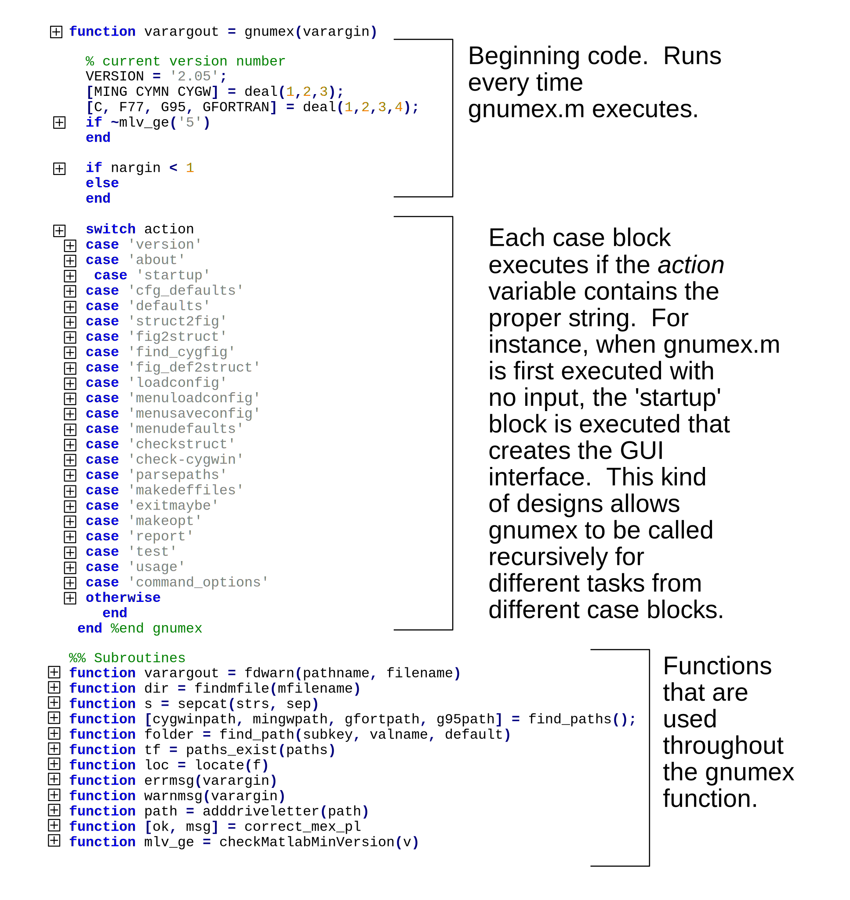

Documentation
Preface and Background
A knowledge of MATLAB is necessary. A knowledge of simple compilation of C, C++, or Fortran is helpful. Also, if you have worked with MinGW, MinGW-w32, or MinGW-w64 that is helpful.
The main attractions for using GCC for Windows over other compilers is the following:
- GCC is free as no money and free as in speech.
- Gfortran is the only Fortran compiler on windows that is free. The only other option with MATLAB seems to be the Intel Fortran compiler.
- Compiling with GCC may allow the same source file to be used on both Unix and Windows operating systems.
There are two methods used to compile code using GCC on Windows. These methods are Minimalist GCC for Windows (MinGW) or the Cygwin environment. MinGW is a native implementation of the GCC compiler and some other tools. MinGW links directly to Microsoft run-time libraries. Cygwin provides a unix-like environment in windows. Programs are compiled to run in this environment and link to a Cygwin dll called cygwin1.dll. The MinGW approach results in faster executables, but restricts compatibility with GCC on Unix. Cygwin produces slower executables, but allows a larger set of Unix-style tools. With Cygwin, the cygwin1.dll must be on the PATH when calling your executable or library. See the Cygwin FAQ for more on the Cygwin API and how the Unix emulation works.
In 2007 a new project, MinGW-w64 was released as a fork from the
original MinGW project. MinGW-w64 added 64 bit support.
However, the MinGW-w64 project has support for both 32 bit and 64
compiling on
Windows but MinGW only supports 32 bit. A brief history of why
MinGW-w64 forked MinGW is available here.
As an added complication, you can also do MinGW compiles using the Cygwin tools. i.e. use the Cygwin tools to link to the Microsoft libraries. This is achieved by passing a flag to the Cygwin gcc, -mno-cygwin. This is refered to as Cygwin/mingw compiling. There are some problems with this option. The old gnumex utilities do support Cygwin-mingw compiles, however it is strongly suggested to use MinGW instead.
Note that Cygwin does not play well with MATLAB. If you use
Cygwin
without -mno-cygwin flag, only GCC 3.2 or below works. The
-mno-cygwin
flag is deprecated. Reports of Cygwin crashing MATLAB are common
on the
mailing list. Therefore, MinGW or MinGW-w64 is recommended.
Support
for cygwin updates will no longer be made after Gnumex 2.05. If
you need
Gnumex to use Cygwin, then use an older version of Gnumex. More
documentation on Cygwin can be found on the old documentation here.
Prerequisite: Installing MinGW or MinGW-w64
Configuring Gnumex requires either MinGW or MinGW-w64 to be installed first. Cygwin is no longer supported. No further updates will be made for Cygwin. If need help with Cygwin please see the old website here.
There are muliple flavors of MinGW and MinGW-w64. Two different links to different MinGW-w64 projects are in the Links section as examples that contributors have used. If you plan to work with 32 bit MATLAB, get the 32 bit compiler. For 64 bit MATLAB, get a 64 bit compiler.
As an example, here is instructions for the compiler from TDM-GCC:
- Download TDM-GCC package from here. If you have 32bit MATLAB, get the 32 bit TDM-GCC package. If you have 64bit MATLAB get the 64bit version.
- Run the installer and follow the instructions. Install to the default location of TDM-GCC-32 or TDM-GCC-64. Please note that the installer modifies the PATH environmental variable (if you don't know what this is, google "windows environmental variable").
- That's it. Nothing to it.
Installing and Setting Up Gnumex
- Obtain the latest version of Gnumex from the Download section.
- Unpack the archive (using tar, winzip, whatever) into a directory of your choice - say ...\Documents\gnumex. You now have: a Matlab install routine, gnumex.m; a couple of mex file supporting routines (shortpath.dll, uigetpath.dll); a hacked version of the windows dll utility, dlltool ( click to see past issue with dlltool), and some perl scripts.
- To setup Gnumex, run the gnumex script from the install directory (e.g
...\Documents\gnumex). A Matlab figure window comes up, with a
variety of options, which should look a little like this:

- Fill in the dialog window and then click "Make options file." Gnumex will use all of the filled information to generate a new batch file-- usually called mexopts.bat--that Matlab can use to mex code.
Usage
- MinGW root directory (maybe blank): This should point to the base directory of MinGW or MinGW-w64. For example, C:\TDM-GCC-64
- Cygwin root directory (or blank): This is the base folder of Cygwin. Often C:\cygwin .
- Path to g95.exe (or blank): This is the folder that g95.exe is located. For instance, C:\TDM-GCC-64\bin .
- Path to gfortran.exe (or blank): This is the folder containing gfortran. For instance, C:\TDM-GCC-64\bin .
- Path to gnumex utilities: This where the install directory of gnumex is located.
- Environment / linking type: Available options are MinGW, Cygwin, and -mno-cygwin. The -mno-cygwin option is deprecated in current versions of Cygwin. Only Cygwin up to gcc 3.2 is supported. Please use the old documentation to find out how to use the correct ancient Cygwin package here.
- Generate mex ddl or engine exe? : Creating mex files (dlls) or standalone Matlab engine exe files. The default is Mex dll. The the Matlab documentation for more information.
- Language for compilation: Specify which of supported compilers for different fortran and C/C++ compilers to use. The available options are Fortran 77, Fortran 95 (g95), Fortran 95 (gfortran).
- Add stub (yes if WIndows 95/98)? : This no longer used. Your selection does not matter.
- Optimization level: -O1, -O2, -03, and -mtune=native are available. The larger the number, the higher the level of optimization but error are harder to trace. For debugging, disable optimization. For imformation on the different levels, see Optimization Options in GCC. -mtune=native tunes the generated code based on the processor family type of the compiling machine. For more information on -mtune=native, see Intel 386 and AMD x86-64 Options in the GCC documentation. More on Optimization from the Gnumex team: here.
- Path for libraries and .def files: Path for
import libraries, .lib, and definition files, .def, for the MATLAB dll's
are saved.
- Mex options file to create: Controls where Gnumex save the Mex options file. The default is where MATLAB stores the Mex options file, mexopts.bat.
The Code
The main piece of code is the gnumex.m function. Below is
a description of the contents of gnumex.m
Cygwin Support
Cygwin still works but no there is no plan to maintain support with Cygwin. If you need more information on Gnumex with Cygwin, please see the old website here.
Special Topics
Fortran Compiling
Fortran compiling seems to have caused the more problems than the other languages with Gnumex over the years. Currently, Gnumex will work with gfortran for 32bit. Old versions of g77, g95, gfortran also work. 64-bit fortran has worked in some cases but still needs work.
Fortran File Extensions
Fortran 77 programs and Fortran 90/95 programs in fixed source form should have extension .f, but free form Fortran 95 programs must have extension .f90 (the compilers support also the extension .f95, but Matlab's mex command does not, and .f90 is generally preferred over .f95 anyway).
Case Options and Trailing Underscores
In contrast gfortran does not offer the -fcase switches, and in fact defaults to the behaviour of -fcase-lower. To circumvent the problem that this causes one can use BIND(C,NAME...) clauses in interface blocks for the mx and mex functions, e.g. BIND(C,NAME='MXGETPR') (the mx and mex functions are probably written in C anyway). The demonstration programs give more details.
Mex Functions With Character String Arguments
gfortran seems to have a different mechanism for passing character strings, and the Fortran versions of these functions do not work. Thus mexinterface_c.f90 binds them to the corresponding C-functions (with mixed case names). This means that strings passed to them from gfortran must have an ascii zero appended, viz:
call mexprintf('A message'//char(0))
call mexerrmsgtxt('An error occurred'//char(10)//char(0))
Pointers and %VAL
Matlab sends integer memory addresses (pointers) to the gateway routine and these must be translated to arrays. In g77 the construct %val may be used, but in g95 it is possible to use native pointers. Again the demonstration programs give the details.
Example Fortran Programs
The demo Fortran programs that come with Matlab some use the %val construct
but others use instead the functions mxCopyPtrToXXX and mxCopyXXXToPtr. With
g77 it is much simpler to stick with the %val construct. The example gateway
routine of Matlab, yprimefg.f (in
For Fortran 90 there is an additional demonstration program, powerit.f90, which carries out power iteration (to find dominant eigenvalue) with a sparse matrix. The Fortran 90 demo programs include two modules, mexinterface_c.f90 and mexinterface.f90. The second one is simpler but does not work with gfortran (because of the -fcase issue discussed above), but the second one works for both compilers. These modules define the interface to those mx- and mex- which are used by the demo programs, and if other functions are needed their interface must be added here.
Running the Fortran Examples
Use the html pages stored with each set of examples for the specified compiler you are using.
Linking to LAPACK/BLAS libraries
Mex files doing a lot of matrix algebra are likely to benefit from linking to the highly optimized BLAS and LAPACK routines. Linking steps are described in a Mathworks BLAS/LAPACK help page. For gcc, you simply follow the instructions on that page, but use the Microsoft MSVC++ import libraries to link; e.g, from the matlab prompt:
mex myfile.c libmwlapack.lib
You may on occasion want to link a c file to a fortran object file, which then links to BLAS or LAPACK; in this case, compile the fortran file with the "-fno-underscoring" flag; e.g - outside matlab:
g77 -fno-underscoring -c my_fortran_file.f
Then, inside matlab:
mex myfile.c my_fortran_file.o
c:/matlab6p5/extern/lib/win32/microsoft/msvc60/libmwlapack.lib
Using Autotools with Gnumex
Christopher Hulbert has kindly written a page on using GNU autotools with gnumex. GNU autotools (autoconf and automake) allow you to script platform independent compilation which is often useful for larger projects.